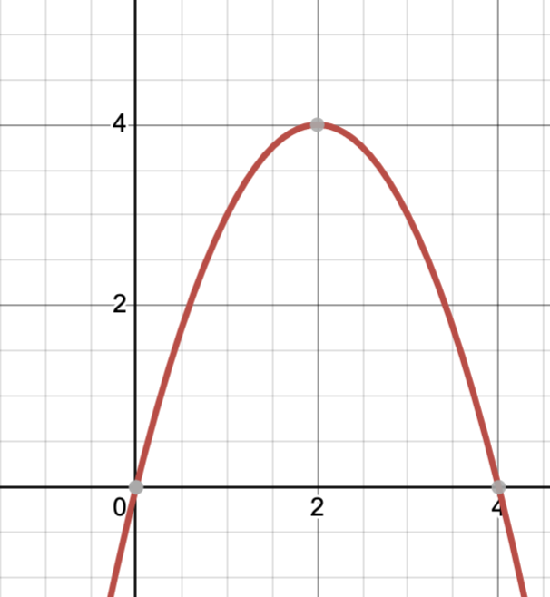

Energy can only change form, not be created or destroyed.
The two kinds of energy we will talk about are kinetic and potential.
You are a mechanical engineer, tasked with solving the foll
Energy in movement
E_k= \frac{1}{2} mv^2
m = mass (kg)
v = velocity (m/s)
The kind of potential energy we care about for this project is elastic potential energy. This is what builds up when you pull back on a spoon or rubber band.
E_p = mgh
m = mass (kilograms)
h = height (meters)
g = gravitational constant (9.81 \frac{m}{s^2})
Objects launched through a gravitational field form the shape of a parabola.

A 45º angle will get you max distance.
E_\text{elastic} = \tfrac{1}{2} k x^2
When launched at a 45 degree angle, the bean bag will follow the following equation:
D = \frac{v^2}{g}
g = 9.81 \frac{m}{s^2}
Use one of these equations to explain the behavior of your bean bag launcher in your writeup.